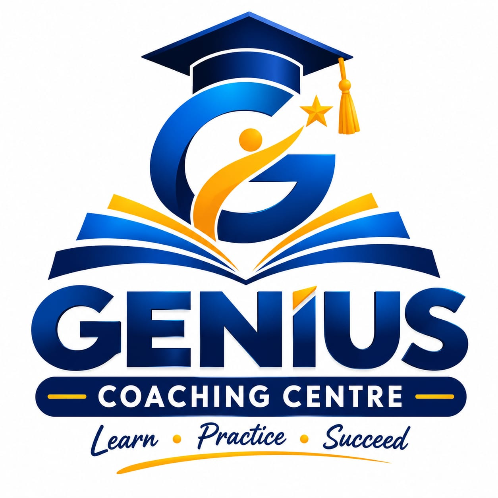
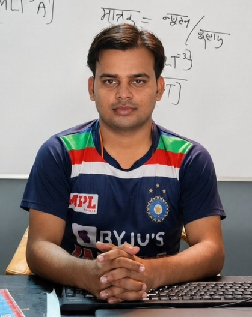

GENIUS COACHING CENTRE PIHANI HARDOI

About Us
Genius Coaching Centre is a leading educational institution dedicated to providing high-quality coaching and guidance to students. Our mission is to empower students with the knowledge and skills they need to succeed academically and personally. We offer a wide range of courses and programs designed to cater to the diverse needs of our students, ensuring that they receive the best possible education and support.
Our Team

Our team at Genius Coaching Centre is composed of dedicated and experienced educators who are passionate about teaching and mentoring students. Our faculty members bring a wealth of knowledge and expertise to the classroom, ensuring that students receive the highest quality education. We are committed to providing personalized attention and support to each student, helping them overcome challenges and achieve their goals. Our team works collaboratively to create engaging and effective learning experiences that inspire students to reach their full potential.
Our Facilities
At Genius Coaching Centre, we take pride in our state-of-the-art facilities that create an optimal learning environment for our students. Our classrooms are equipped with modern teaching aids and technology to enhance the learning experience. We have a spacious auditorium for seminars and events, as well as a well-maintained stadium for sports and recreational activities. Additionally, we provide reliable bus and van services to ensure safe and convenient transportation for our students.
Our Vision
Our vision at Genius Coaching Centre is to be recognized as a premier educational institution that fosters academic excellence, personal growth, and holistic development. We strive to create a nurturing and inclusive environment where students can thrive, explore their potential, and become responsible global citizens. Through our commitment to innovation, quality education, and student success, we aim to make a positive impact on the lives of our students and the community we serve.
Our Mission
Our mission at Genius Coaching Centre is to provide exceptional coaching and guidance that empowers students to achieve their academic and personal goals. We are dedicated to delivering high-quality education, fostering critical thinking, and promoting lifelong learning. Our mission is to create a supportive and inspiring environment where students can develop their skills, build confidence, and reach their full potential. We are committed to nurturing well-rounded individuals who are prepared to excel in their chosen paths and contribute positively to society.
Our Values
At Genius Coaching Centre, we uphold a set of core values that guide our actions and decisions. These values include integrity, excellence, innovation, inclusivity, and student-centeredness. We believe in fostering a culture of respect, collaboration, and continuous improvement. By adhering to these values, we aim to create a positive and enriching learning environment that empowers our students to succeed academically and personally.
Our Goals
Our goals at Genius Coaching Centre are centered around providing exceptional education and support to our students. We aim to help students achieve academic excellence, develop critical thinking skills, and cultivate a love for learning. Our goals include preparing students for competitive exams, fostering personal growth, and equipping them with the knowledge and skills needed for success in their future endeavors. We are committed to creating a positive impact on the lives of our students and helping them reach their full potential.
Our Achievements
Genius Coaching Centre has achieved numerous milestones and accolades in the field of education. Our students have consistently excelled in academic competitions, examinations, and extracurricular activities, earning recognition at local, national, and international levels. We take pride in the success stories of our alumni who have gone on to pursue higher education and successful careers in various fields. Our commitment to excellence and continuous improvement has earned us a reputation as a trusted and respected educational institution.
Our Community Engagement
Genius Coaching Centre actively engages with the local community through various initiatives and outreach programs. We believe in giving back to society and making a positive impact on the lives of those around us. Our community engagement efforts include organizing educational workshops, awareness campaigns, and social service activities that benefit students, parents, and the wider community. We encourage our students to participate in volunteer work and community service, fostering a sense of social responsibility and empathy. By building strong connections with the community, we aim to create a supportive network that enhances the overall educational experience for our students.
Our Future Plans
Genius Coaching Centre is committed to continuous growth and development. Our future plansinclude expanding our course offerings, enhancing our facilities, and incorporating innovative teaching methods to stay at the forefront of education. We aim to establish partnerships with leading educational institutions and industry experts to provide our students with valuable learning opportunities. Additionally, we plan to invest in technology and digital resources to facilitate online learning and remote access to educational materials. Our goal is to create a dynamic and forward-thinking learning environment that prepares our students for success in an ever-changing world.
Our Testimonials
We take pride in the positive feedback and testimonials we receive from our students, parents, and alumni. Their experiences and success stories serve as a testament to the quality of education and support provided at Genius Coaching Centre. We value their input and continuously strive to improve our programs and services based on their feedback. Our testimonials highlight the impact of our coaching centre on students' academic achievements, personal growth, and overall development. We are grateful for the trust and confidence placed in us by our students and their families, and we remain committed to delivering excellence in education.
Our Contact Information
For inquiries, admissions, or any other information, please feel free to reach out to us. You can contact Genius Coaching Centre through the following channels: